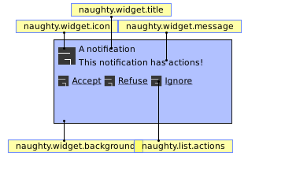

Module: naughty.layout.box
A notification popup widget.
By default, the box is composed of many other widgets:

Info:
- Copyright: 2017 Emmanuel Lepage Vallee
- Author: Emmanuel Lepage Vallee <elv1313@gmail.com>
Object properties
| notification | N/A | The widget notification object. | |
| widget_template | widget | The widget template to construct the box content. | |
| border_width | integer | Border width. | Inherited from wibox |
| border_color | string | Border color. | Inherited from wibox |
| ontop | boolean | On top of other windows. | Inherited from wibox |
| cursor | string | The mouse cursor. | Inherited from wibox |
| visible | boolean | Visibility. | Inherited from wibox |
| opacity | number | The opacity of the wibox, between 0 and 1. | Inherited from wibox |
| type | string | The window type (desktop, normal, dock, …). | Inherited from wibox |
| x | integer | The x coordinates. | Inherited from wibox |
| y | integer | The y coordinates. | Inherited from wibox |
| width | width | The width of the wibox. | Inherited from wibox |
| height | height | The height of the wibox. | Inherited from wibox |
| screen | screen | The wibox screen. | Inherited from wibox |
| drawable | drawable | The wibox’s drawable. | Inherited from wibox |
| widget | widget | The widget that the wibox displays. | Inherited from wibox |
| window | string | The X window id. | Inherited from wibox |
| shape_bounding | N/A | The wibox’s bounding shape as a (native) cairo surface. | Inherited from wibox |
| shape_clip | N/A | The wibox’s clip shape as a (native) cairo surface. | Inherited from wibox |
| shape_input | N/A | The wibox’s input shape as a (native) cairo surface. | Inherited from wibox |
| shape | gears.shape | The wibar’s shape. | Inherited from wibox |
| input_passthrough | boolean | Forward the inputs to the client below the wibox. | Inherited from wibox |
| buttons | buttons_table | Get or set mouse buttons bindings to a wibox. | Inherited from wibox |
| bg | c | The background of the wibox. | Inherited from wibox |
| bgimage | gears.suface or string or function | The background image of the drawable. | Inherited from wibox |
| fg | color | The foreground (text) of the wibox. | Inherited from wibox |
Object methods
| :geometry (A) | Get or set wibox geometry. | Inherited from wibox |
| :struts (strut) | Get or set wibox struts. | Inherited from wibox |
| :setup {[args]} | Set a declarative widget hierarchy description. | Inherited from wibox |
| :find_widgets (x, y) | Find a widget by a point. | Inherited from wibox |
Theme variables
| beautiful.notification_max_width | number | The maximum notification width. | |
| beautiful.notification_position | string | The maximum notification position. | |
| beautiful.bg_normal | color | The default background color. | Inherited from wibox |
| beautiful.fg_normal | color | The default foreground (text) color. | Inherited from wibox |
Object properties
- notification (N/A)
- The widget notification object.
- widget_template (widget)
-
The widget template to construct the box content.
The default template is (less or more):
{ { { { { naughty.widget.icon, { naughty.widget.title, naughty.widget.message, spacing = 4, layout = wibox.layout.fixed.vertical, }, fill_space = true, spacing = 4, layout = wibox.layout.fixed.horizontal, }, naughty.list.actions, spacing = 10, layout = wibox.layout.fixed.vertical, }, margins = beautiful.notification_margin, widget = wibox.container.margin, }, id = "background_role", widget = naughty.container.background, }, strategy = "max", width = width(beautiful.notification_max_width or beautiful.xresources.apply_dpi(500)), widget = wibox.container.constraint, } - border_width (integer) · Inherited from wibox · 1 signal
-
Border width.
Click to display more Emit signals:
property::border_widthWhen the border_width value changes.selfnaughty.layout.box The object which changed (useful when connecting many object to the same callback).
- border_color (string) · Inherited from wibox · 1 signal
-
Border color.
Please note that this property only support string based 24 bit or 32 bit colors:
Red Blue _| _| #FF00FF T‾ Green Red Blue _| _| #FF00FF00 T‾ ‾T Green Alpha
Click to display more Emit signals:
property::border_colorWhen the border_color value changes.selfnaughty.layout.box The object which changed (useful when connecting many object to the same callback).
- ontop (boolean) · Inherited from wibox · 1 signal
-
On top of other windows.
Click to display more Emit signals:
property::ontopWhen the ontop value changes.selfnaughty.layout.box The object which changed (useful when connecting many object to the same callback).
- cursor (string) · Inherited from wibox · 1 signal
-
The mouse cursor.
See also:
Click to display more Emit signals:
property::cursorWhen the cursor value changes.selfnaughty.layout.box The object which changed (useful when connecting many object to the same callback).
- visible (boolean) · Inherited from wibox · 1 signal
-
Visibility.
Click to display more Emit signals:
property::visibleWhen the visible value changes.selfnaughty.layout.box The object which changed (useful when connecting many object to the same callback).
- opacity (number) · Inherited from wibox · 1 signal
-
The opacity of the wibox, between 0 and 1.
Type constraints:
- opacity number (between 0 and 1)
Click to display more Emit signals:
property::opacityWhen the opacity value changes.selfnaughty.layout.box The object which changed (useful when connecting many object to the same callback).
- type (string) · Inherited from wibox · 1 signal
-
The window type (desktop, normal, dock, …).
See also:
Click to display more Emit signals:
property::typeWhen the type value changes.selfnaughty.layout.box The object which changed (useful when connecting many object to the same callback).
- x (integer) · Inherited from wibox · 1 signal
-
The x coordinates.
Click to display more Emit signals:
property::xWhen the x value changes.selfnaughty.layout.box The object which changed (useful when connecting many object to the same callback).
- y (integer) · Inherited from wibox · 1 signal
-
The y coordinates.
Click to display more Emit signals:
property::yWhen the y value changes.selfnaughty.layout.box The object which changed (useful when connecting many object to the same callback).
- width (width) · Inherited from wibox · 1 signal
-
The width of the wibox.
Click to display more Emit signals:
property::widthWhen the width value changes.selfnaughty.layout.box The object which changed (useful when connecting many object to the same callback).
- height (height) · Inherited from wibox · 1 signal
-
The height of the wibox.
Click to display more Emit signals:
property::heightWhen the height value changes.selfnaughty.layout.box The object which changed (useful when connecting many object to the same callback).
- screen (screen) · Inherited from wibox · 1 signal
-
The wibox screen.
Click to display more Emit signals:
property::screenWhen the screen value changes.selfnaughty.layout.box The object which changed (useful when connecting many object to the same callback).new_valuescreen The new value affected to the property.
- drawable (drawable) · Inherited from wibox · 1 signal
-
The wibox’s drawable.
Click to display more Emit signals:
property::drawableWhen the drawable value changes.selfnaughty.layout.box The object which changed (useful when connecting many object to the same callback).
- widget (widget) · Inherited from wibox · 1 signal
-
The widget that the wibox displays.
Click to display more Emit signals:
property::widgetWhen the widget value changes.selfnaughty.layout.box The object which changed (useful when connecting many object to the same callback).new_valuewidget The new value affected to the property.
- window (string) · Inherited from wibox · 1 signal
-
The X window id.
See also:
Click to display more Emit signals:
property::windowWhen the window value changes.selfnaughty.layout.box The object which changed (useful when connecting many object to the same callback).
- shape_bounding (N/A) · Inherited from wibox · 1 signal
-
The wibox’s bounding shape as a (native) cairo surface.
If you want to set a shape, let say some rounded corners, use the shape property rather than this. If you want something very complex, for example, holes, then use this.
See also:
Click to display more Emit signals:
property::shape_boundingWhen the shape_bounding value changes.selfnaughty.layout.box The object which changed (useful when connecting many object to the same callback).
- shape_clip (N/A) · Inherited from wibox · 1 signal
-
The wibox’s clip shape as a (native) cairo surface.
The clip shape is the shape of the window content rather than the outer window shape.
See also:
Click to display more Emit signals:
property::shape_clipWhen the shape_clip value changes.selfnaughty.layout.box The object which changed (useful when connecting many object to the same callback).
- shape_input (N/A) · Inherited from wibox · 1 signal
-
The wibox’s input shape as a (native) cairo surface.
The input shape allows to disable clicks and mouse events on part of the window. This is how input_passthrough is implemented.
See also:
Click to display more Emit signals:
property::shape_inputWhen the shape_input value changes.selfnaughty.layout.box The object which changed (useful when connecting many object to the same callback).
- shape (gears.shape) · Inherited from wibox · 1 signal
-
The wibar’s shape.
See also:
Click to display more Emit signals:
property::shapeWhen the shape value changes.selfnaughty.layout.box The object which changed (useful when connecting many object to the same callback).new_valueshape The new value affected to the property.
- input_passthrough (boolean) · Inherited from wibox · 1 signal
-
Forward the inputs to the client below the wibox.
This replace the shape_input mask with an empty area. All mouse and keyboard events are sent to the object (such as a client) positioned below this wibox. When used alongside compositing, it allows, for example, to have a subtle transparent wibox on top a fullscreen client to display important data such as a low battery warning.
See also:
Click to display more Emit signals:
property::input_passthroughWhen the input_passthrough value changes.selfnaughty.layout.box The object which changed (useful when connecting many object to the same callback).new_valuebooleanThe new value affected to the property.
- buttons (buttons_table) · Inherited from wibox · 1 signal
-
Get or set mouse buttons bindings to a wibox.
Type constraints:
- buttons_table A table of buttons objects, or nothing.
Click to display more Emit signals:
property::buttonsWhen the buttons value changes.selfnaughty.layout.box The object which changed (useful when connecting many object to the same callback).
- bg (c) · Inherited from wibox · 1 signal · 1 theme variable
-
The background of the wibox.
The background color can be transparent. If there is a compositing manager such as compton, then it will be real transparency and may include blur (provided by the compositor). When there is no compositor, it will take a picture of the wallpaper and blend it.
Type constraints:
- The c background to use. This must either be a cairo pattern object, nil or a string that gears.color() understands.
See also:
Click to display more Emit signals:
property::bgWhen the bg value changes.selfnaughty.layout.box The object which changed (useful when connecting many object to the same callback).new_valueTheThe new value affected to the property.
Consumed theme variables:
Theme variable Usage beautiful.bg_normal The default (fallback) bg color. - bgimage (gears.suface or string or function) · Inherited from wibox · 1 signal
-
The background image of the drawable.
If
imageis a function, it will be called with(context, cr, width, height)as arguments. Any other arguments passed to this method will be appended.Type constraints:
- image gears.suface, string or function A background image or a function.
See also:
Click to display more Emit signals:
property::bgimageWhen the bgimage value changes.selfnaughty.layout.box The object which changed (useful when connecting many object to the same callback).new_valueimageThe new value affected to the property.
- fg (color) · Inherited from wibox · 1 signal · 1 theme variable
-
The foreground (text) of the wibox.
Type constraints:
- c color The foreground to use. This must either be a cairo pattern object, nil or a string that gears.color() understands.
- color
See also:
Click to display more Emit signals:
property::fgWhen the fg value changes.selfnaughty.layout.box The object which changed (useful when connecting many object to the same callback).new_valuecThe new value affected to the property.
Consumed theme variables:
Theme variable Usage beautiful.fg_normal The default (fallback) fg color.
Object methods
- :geometry (A) · Inherited from wibox · 1 signal
-
Get or set wibox geometry. That’s the same as accessing or setting the x,
y, width or height properties of a wibox.
Parameters:
- A table with coordinates to modify.
Returns:
-
A table with wibox coordinates and geometry.
Click to display more Emit signals:
property::geometryWhen the geometry change.geotable The geometry table.
- :struts (strut) · Inherited from wibox · 1 signal
-
Get or set wibox struts.
Struts are the area which should be reserved on each side of the screen for this wibox. This is used to make bars and docked displays. Note that awful.wibar implements all the required boilerplate code to make bar. Only use this if you want special type of bars (like bars not fully attached to the side of the screen).
Parameters:
- strut A table with new strut, or nothing
Returns:
-
The wibox strut in a table.
See also:
Click to display more Emit signals:
property::struts
- :setup {[args]} · Inherited from wibox
-
Set a declarative widget hierarchy description.
See The declarative layout system
Parameters:
- args An array containing the widgets disposition
- :find_widgets (x, y) · Inherited from wibox
-
Find a widget by a point.
The wibox must have drawn itself at least once for this to work.
Parameters:
- x number X coordinate of the point
- y number Y coordinate of the point
Returns:
-
table
A sorted table of widgets positions. The first element is the biggest
container while the last is the topmost widget. The table contains x, y,
width, height and widget.
Theme variables
- beautiful.notification_max_width (number)
- The maximum notification width.
- beautiful.notification_position (string)
-
The maximum notification position.
Valid values are:
- top_left
- top_middle
- top_right
- bottom_left
- bottom_middle
- bottom_right
- beautiful.bg_normal (color) · Inherited from wibox
-
The default background color.
The background color can be transparent. If there is a compositing manager such as compton, then it will be real transparency and may include blur (provided by the compositor). When there is no compositor, it will take a picture of the wallpaper and blend it.
See also:
- beautiful.fg_normal (color) · Inherited from wibox
-
The default foreground (text) color.
See also: